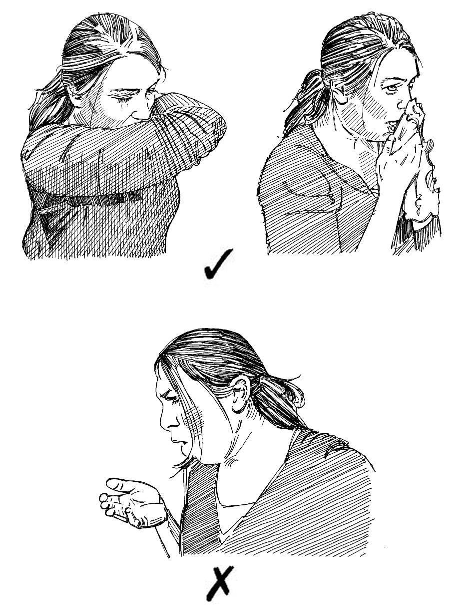

Overview
- It is not pleasant or healthy to cough in people’s faces.
- Coughs can transmit diseases that are carried in droplets or in air.
- Learning how to cough properly (called “coughing etiquette”) is important because it is more pleasant behaviour for those around you and prevents the spread of disease.
Why learn coughing etiquette?
- Some diseases can be transmitted from one person to another in droplets of saliva or mucous or in the air.
- This means that, when we cough, we can spread diseases that we have to other people and make them sick.
- To avoid giving diseases to other people, cough in the recommended manner, which does not spread germs.
DOs and DON’Ts
- Many people cough into their hands to stop germs spreading. This is NOT good practice because, afterwards, you can still transmit germs by touching things or shaking the hands of other people. Don’t cough into your hand.
- The correct way to cough without transmitting germs is to use a handkerchief or your sleeve. When you cough into either of these, you are less likely to spread germs. Cough into a handerchief or on your sleeve.

Correct and incorrect ways of coughing
What you can do
- Explain coughing etiquette to people in your community.
- Explain that coughing etiquette matters because it helps to prevent the transmission of diseases that are spread through droplets carried in the air.
- Show people how to cough properly and ask them to teach the same behaviour to others.
- Ask your local schools if they would like you to come and speak to children about coughing etiquette.
- When talking about coughing etiquette, also teach people about proper hygiene (see Action tool 28 and 34).
- Make posters that show the DOs and DON’Ts of coughing etiquette and put them up around your community. (See Action tool 43 for more information on social mobilization techniques).